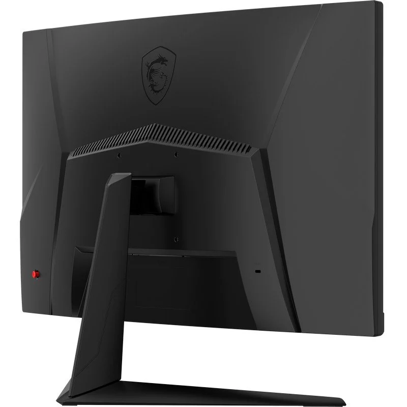

MSI G27CQ4 E2 27" LED WQHD 170Hz FreeSync Premium Curva

Especificaciones
Juego curvo 1500R: Disfruta del juego inmersivo con una tasa de curvatura de 1500R.
Frecuencia de actualización alta de 250 Hz: Experimente un juego fluido con una frecuencia de actualización ultrarrápida de 250 Hz, que le brinda ventaja en los juegos de movimiento rápido.
Tiempo de respuesta rápido de 1 ms: Elimine el desgarro de la pantalla y las velocidades de fotogramas entrecortadas con un tiempo de respuesta de 1 ms.
Vision nocturna: Sintonizador negro inteligente para alegrar tu día resaltando los detalles finos en las áreas oscuras.
Amplia gama de colores: Los colores y detalles del juego se verán más realistas y refinados, para llevar la inmersión al juego al límite.
Diseño sin marco: Con el bisel angosto, ni siquiera notará el monitor en el fragor del momento.